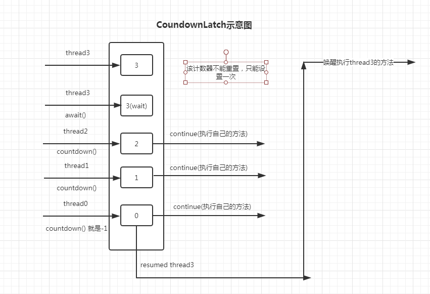
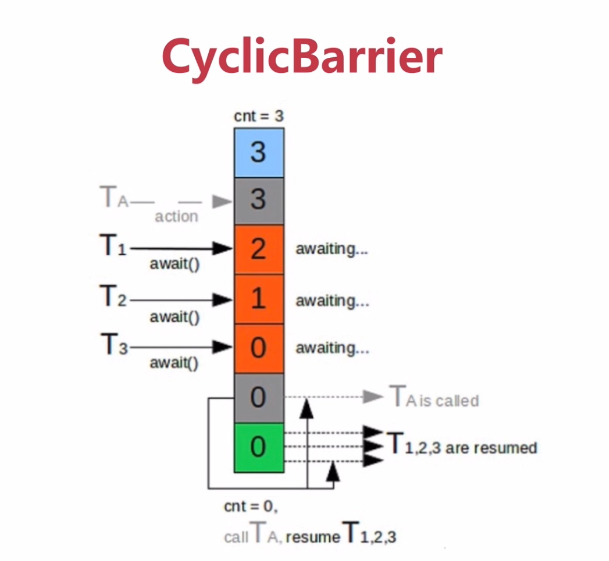
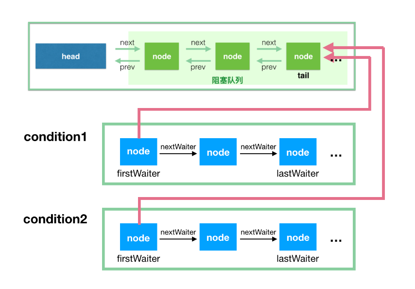

抽象队列同步器AQS
CountDownLatch（场景如并行计算，）

package com.mmall.concurrency.example.aqs; import lombok.extern.slf4j.Slf4j; import java.util.concurrent.CountDownLatch; import java.util.concurrent.ExecutorService; import java.util.concurrent.Executors; import java.util.concurrent.TimeUnit; @Slf4j public class CountDownLatchExample2 { private final static int threadCount = 200; public static void main(String[] args) throws Exception { ExecutorService exec = Executors.newCachedThreadPool(); final CountDownLatch countDownLatch = new CountDownLatch(threadCount); for (int i = 0; i < threadCount; i++) { //这个线程睡眠的方法放到执行线程的外面并没有预想的先是finish的结果出现，而是最后出现 //说明这个线程的睡眠只针对的是主线程，而不是下面的线程 //Thread.sleep(100); final int threadNum = i; exec.execute(() -> { try { test(threadNum); } catch (Exception e) { log.error("exception", e); } finally { countDownLatch.countDown(); } }); } //等待方法可以自动设置等待时间，超过就会自己执行 countDownLatch.await(10, TimeUnit.MILLISECONDS); log.info("finish"); exec.shutdown();//这个方法不是马上关闭线程池，而是等待其他线程执行完成之后再进行关闭 } private static void test(int threadNum) throws Exception { Thread.sleep(100); log.info("{}", threadNum); } }Semaphore（维护当前访问的线程的个数，常用于访问有限资源，像是数据库之类的）
final Semaphore semaphore = new Semaphore(3); for (int i = 0; i < threadCount; i++) { final int threadNum = i; exec.execute(() -> { try { if (semaphore.tryAcquire(5000, TimeUnit.MILLISECONDS)) { // 尝试获取一个许可 //semaphore.acquire();//获取一个许可 test(threadNum); semaphore.release(); // 释放一个许可 } } catch (Exception e) { log.error("exception", e); } }); }
CylicBarrier
*
就是一个可循环重置计数的CountDownLatch，但是计数是从小到大开始加，累计到一定值之后，计数重置为0，线程被唤醒，然后继续执行计数，重复使用
package com.mmall.concurrency.example.aqs; import lombok.extern.slf4j.Slf4j; import java.util.concurrent.CyclicBarrier; import java.util.concurrent.ExecutorService; import java.util.concurrent.Executors; import java.util.concurrent.TimeUnit; @Slf4j public class CyclicBarrierExample2 { private static CyclicBarrier barrier = new CyclicBarrier(5,()->{ //这里可以在线程都唤醒的时候，先执行这个lambda表达式，再执行线程 }); public static void main(String[] args) throws Exception { ExecutorService executor = Executors.newCachedThreadPool(); for (int i = 0; i < 10; i++) { final int threadNum = i; Thread.sleep(1000); executor.execute(() -> { try { race(threadNum); } catch (Exception e) { log.error("exception", e); } }); } executor.shutdown(); } private static void race(int threadNum) throws Exception { Thread.sleep(1000); log.info("{} is ready", threadNum); try { //使线程陷入等待状态，并自动将计数+1，待计数满足CyclicBarrier的初始值之后，所有等待的计数器唤醒 //barrier.await(); //如果是设置等待时间的话，超过这个时间之后，线程不再等待满足计数器初始的值，会抛出异常，如果想继续正常执行，就在await方法里面添加捕捉异常，从而跳过后面执行的线程 barrier.await(2000, TimeUnit.MILLISECONDS); } catch (Exception e) { log.warn("BarrierException", e); } log.info("{} continue", threadNum); } }
ReetrantLock
和synchronized现在基本上性能差别不大
场景一：可以指定是公平锁还是非公平锁(就是等待线程是排队获取还是随机获取)
场景二：提供Condition类，可以分组唤醒需要唤醒的线程
场景三：提供终端等待线程的机制，lock.lockInterruptibly()
Condition和FutureTask

package com.mmall.concurrency.example.lock; import lombok.extern.slf4j.Slf4j; import java.util.concurrent.locks.Condition; import java.util.concurrent.locks.ReentrantLock; @Slf4j public class LockExample6 { public static void main(String[] args) { ReentrantLock reentrantLock = new ReentrantLock(); Condition condition = reentrantLock.newCondition(); new Thread(() -> { try { reentrantLock.lock(); log.info("wait signal"); // 1 condition.await();//锁等待，进入condiiton队列 } catch (InterruptedException e) { e.printStackTrace(); } log.info("get signal"); // 4 reentrantLock.unlock(); }).start(); new Thread(() -> { reentrantLock.lock(); log.info("get lock"); // 2 try { Thread.sleep(3000); } catch (InterruptedException e) { e.printStackTrace(); } condition.signalAll();//这个是释放condition队列里的所有节点，并将节点按照顺序重新添加到同步队列 log.info("send signal ~ "); // 3 reentrantLock.unlock(); }).start(); } }FutureTask和Callable、Future一样，是可以在多线程执行返回特定的值，这是和Runnable不同的地方
```java
package com.mmall.concurrency.example.aqs;import lombok.extern.slf4j.Slf4j;
import java.util.concurrent.Callable;
import java.util.concurrent.FutureTask;@Slf4j
public class FutureTaskExample {public static void main(String[] args) throws Exception { FutureTask<String> futureTask = new FutureTask<String>(new Callable<String>() { @Override public String call() throws Exception { log.info("do something in callable"); Thread.sleep(5000); return "Done"; } }); new Thread(futureTask).start(); log.info("do something in main"); Thread.sleep(1000); String result = futureTask.get(); log.info("result：{}", result); }} //futrue例子： static class MyCallable implements Callable
{ @Override public String call() throws Exception { log.info("do something in callable"); Thread.sleep(5000); return "Done"; } } public static void main(String[] args) throws Exception { ExecutorService executorService = Executors.newCachedThreadPool(); Future<String> future = executorService.submit(new MyCallable()); log.info("do something in main"); Thread.sleep(1000); String result = future.get(); log.info("result：{}", result); }```
Fork和Join
可能会出现一个线程去窃取另一个线程待执行的任务的情况，所以窃取任务的线程从双端队列的尾部获取任务，被窃取的线程从队列头获取任务
fork和join的同步只能由自己的方法操作作为同步的机制，不能使用额外的同步机制，如果这样的话，其他的fork线程就无法执行相应的任务；fork和join线程不能用于拆分读写IO文件流；fork和join的任务不能抛出检查的异常，必须通过相当的代码来处理这些异常
BlockingQueue（线程安全，主要是生产-消费队列，不接受null元素）
种类比较多，本质上是个双端队列，当队列任务满的时候，插入队列任务的线程就会堵塞，当队列为空的时候，移出队列任务的线程就会堵塞
ArrayBlockingQueue，先进先出的队列
DelayQueue,只有在特定的时间之后才能提取元素，无界队列，应用方面比如缓存对象，定时关闭连接，超时处理等等
LinkedBlockQueue:也是FIFO，只是链表实现
PriorityBlockingQueue：无边界队列，允许null插入，插入该队列的对象必须实现Compareable接口
SynchronizedQueue:只允许一个元素的队列，一个线程插入之后，除非另一个线程移除，否则就会堵塞